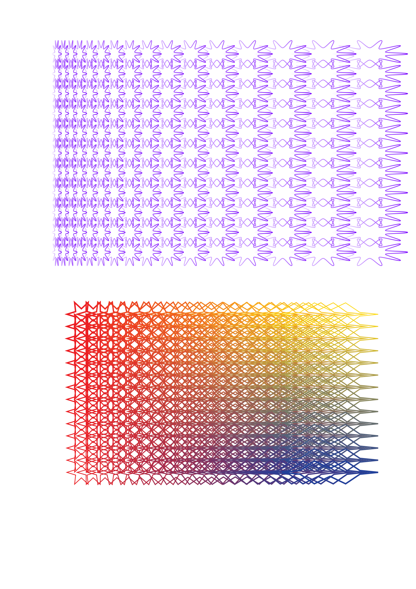
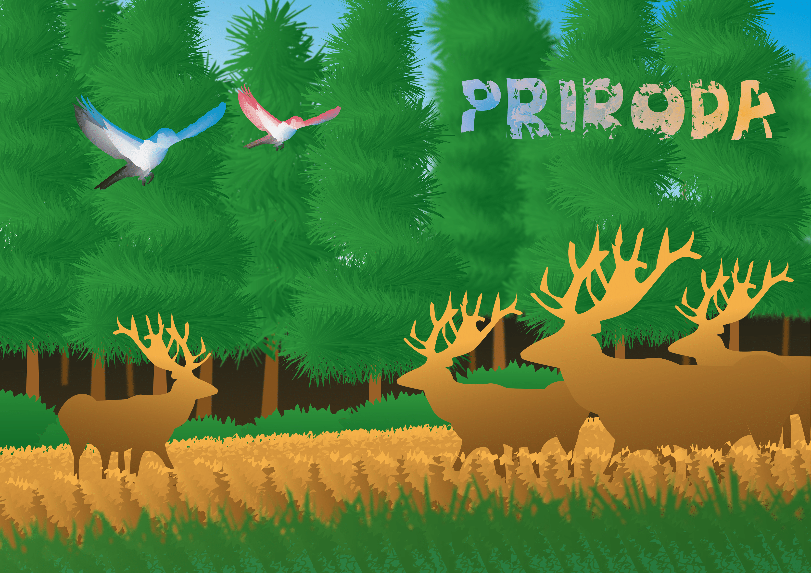

Vježbe
1.Izrada vlastitog fonta pomoću FontForge alata

2. Bezierove krivulje u programu Adobe Illustrator.

3. Crtanje alatom pen i multipliciranje objekata u programu Adobe Illustrator.


4. Izrada složenih objekata i gradijenti u Illustratoru.

Vektorska grafika, projektni zadatak.

5. Retuširanje u programu photoshop.


6. Koloriranje crno bijele slike.

7. Fotomontaža.

Projektni zadatak u photoshopu

8. Video obrađen kao kinemagraf u programu Premiere

9. Video montaža u programu Premiere pro
⬅ Povratak na početnu